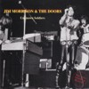
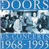

UNKNOWN SOLDIERS (CD)
Sugercane Records SC 52007, Italy 1993 |
| 1.Back Door Man/ 2.Break On Through/
3.When The Music's Over/ 4.Close To You (the band
stops half way through the song)/ 5.Manish Boy/
6.Light My Fire/ 7.The Soft Parade |
| Sources: 1-6= Live at the Winterland,
San Francisco, December 26th, 1967 (cover says
Live at Monterey, December 12th, 1967, which is
not true); 7= Critique Show, PBS TV, WNET, New
York, May 13th, 1969 (cover says May 23rd, 1969,
which was the date of the broadcast, not of the
recording), taken from the unofficial video
Critique. |
| Soundquality: |
 to to |
|
|
|
|
 |
| Rarity Of Material: |
|
|
|
|
|
| Visual Attractiveness: |
|
|
|
|
|
Finally a good bootleg CD for the collectors. This tape
hasn't been published before (except some excerpts on the
rare vinyl LP Singing The Blues Vol.II, and of
course The Soft Parade on some bad Critique
LPs and CDs), and I really like it. Well, the quality
isn't that good, but it doesn't matter that much. After
all those rip-offs, there's a CD with (for collectors)
new material on, and although this Winterland concert
(the cover says it was taped in Monterey, which is not
true, but there are some tape copies around labeled Monterey;
most likely the CD was made from one of those) wasn't one
of The Doors' best concerts, it is a perfect example how
the band sounded on a pretty normal night. I like how Ray
interrupted the ill-fated Close To You (dead from
the beginning) "We lost it, we lost it...",
and how he started the next song, a mindblowing version
of Manish Boy. Yes, guys, it's Jim in the
background, but it's Ray's song, his old Screaming Ray
Daniels' song, the one he did many times with Rick
And The Ravens at the Turkey Joint West in Santa
Monica. A great and powerful version. The addition of the
song The Soft Parade wasn't really necessary at
all, and its quality is better on the official video.
Summary: A nice CD (if you don't expect the best sound),
nice cover, and - a never before published (bootlegged)
Doors concert. A very rare and hard to get bootleg CD.
US-CONCERTS (CD)
P 910092, Germany 1994 |
| 1.Roadhouse Blues/ 2.Break On Through/
3.Light My Fire/ 4.Five To One/ 5.Little Red
Rooster/ 6.Who Do You Love/ 7.A Little Game
(cover says Go Insane) 8.The Hill Dwellers/
9.People Are Strange/ 10.Love Street/ 11.Love Me
Two Times/ 12.The Soft Parade/ 13.Summer's Almost
Gone/ 14.Manish Boy |
| Sources: 1-3= Rock'n'Roll Hall Of Fame
Induction concert with Eddie Vedder on vocals,
Century Plaza Hotel, Los Angeles, January 12th,
1993; 4=Center Coliseum, Seattle, June 5th, 1970;
5+6=Pacific National Exhibition Coliseum,
Vancouver, Canada, June 6th, 1970;
7,8,10+11=Konserthuset, Stockholm, Sweden,
September 20th, 1968, second show; 9+13=Matrix
Club, San Francisco, March 7th, 1967; 12=Critique
Show, PBS TV, WNET, New York, May 13th, 1969;
14=Winterland, San Francisco, December 26th,
1967. |
| Soundquality: |
to |
|
|
|
|
 |
| Rarity Of Material: |
|
|
|
|
|
| Visual Attractiveness: |
|
|
|
|
|
Telling people the tracks were taped in the USA (but half
of the CD's songs weren't!), mixing one track into
another, using an official album photo for the cover (the
fold-out photo of Morrison Hotel) and giving Eddie
Vedder the first tracks of a Doors bootleg without
mentioning him on the cover leads to the following short
comment: Don't buy this rip-off product.
|